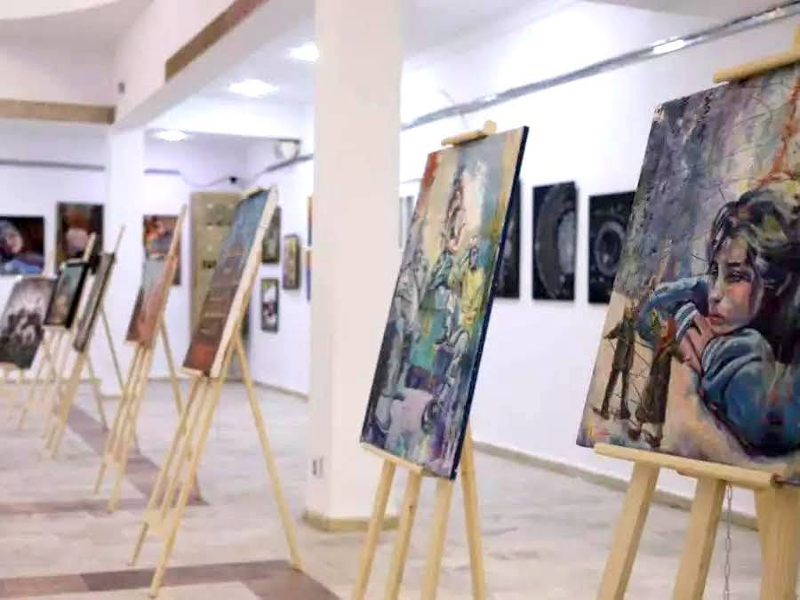

Arc en ciel sur Laghouat
Dans la lumière blanche
du Sud,
Au seuil d’octobre,
Le vent du désert
effleure les murs,
et se tait.
Laghouat s’éveille
Et se drape
d’un voile clair,
en toile immense.
le désert suspend
sa poussière,
et l’art descend
comme une pluie rare,
et déjà,
la couleur prend naissance.
Des toiles blanches
s’ouvrent au matin,
on y accroche
des morceaux de rêve :
un visage,
un palmier,
un chemin,
tout vibre
dans la lumière neuve.
Sur les toiles dressées
de silence,
les pinceaux s’animent,
les mains s’enflamment.
Chaque trait
devient souvenance,
chaque ombre,
un écho d’âme.
Les peintres parlent peu,
leurs yeux racontent.
Les toiles sèchent
au souffle du chergui,
et dans le silence
où la lumière affronte,
naissent des mondes,
simples et infinis.
Les sables gardent
mémoire des gestes,
des pigments tombés
comme des prières,
et l’horizon,
vaste
et modeste,
accueille le rêve
en poussière claire.
Un jeune illustre la pierre,
comme on dégage
un souvenir enfoui.
Une femme peint
le désert vert,
un enfant rit
devant l’inédit.
Peintres,
Vidéastes,
artisans du visible,
offrent au ciel
leur patience infinie —
un portrait d’Algérie
sensible,
où chaque ombre dit :
« Je suis ici. »
Plus tard,
la nuit allume l’écran,
et les images
se font murmures.
Des visages d’ombres
et d’argent
racontent la vie,
la soif,
l’azur.
Les courts-métrages
s’allument la nuit,
écrans tendus
comme des draps
d’étoiles,
et dans la foule,
un souffle unit
ceux qui cherchent
la beauté,
sans voile.
Le festival s’étend
comme un conte,
entre les murs
d’argile et d’espoir.
Les voix,
les gestes,
les œuvres racontent
que créer,
c’est aussi croire.
« Notre patrimoine
est notre identité »,
chante le vent
dans les galeries.
Entre la pierre
et l’éternité,
Laghouat respire —
et tout s’écrit.
Et lorsque le soleil
glisse derrière la palmeraie,
on devine encore,
dans l’air apaisé,
un parfum de couleurs,
un écho discret :
celui d’un peuple
qui peint pour exister.
Djamel Metref
At Yenni le 26 octobre 2025

← Tous les poèmes
Arc en ciel sur Laghouat
Carnets de voyages · Écriture et poésie